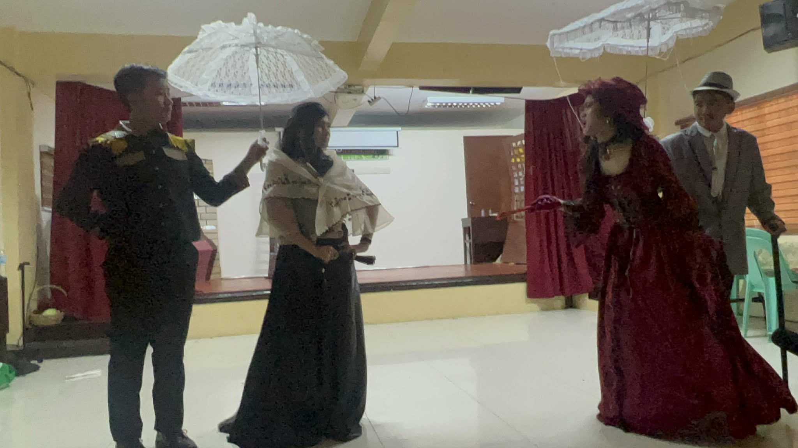
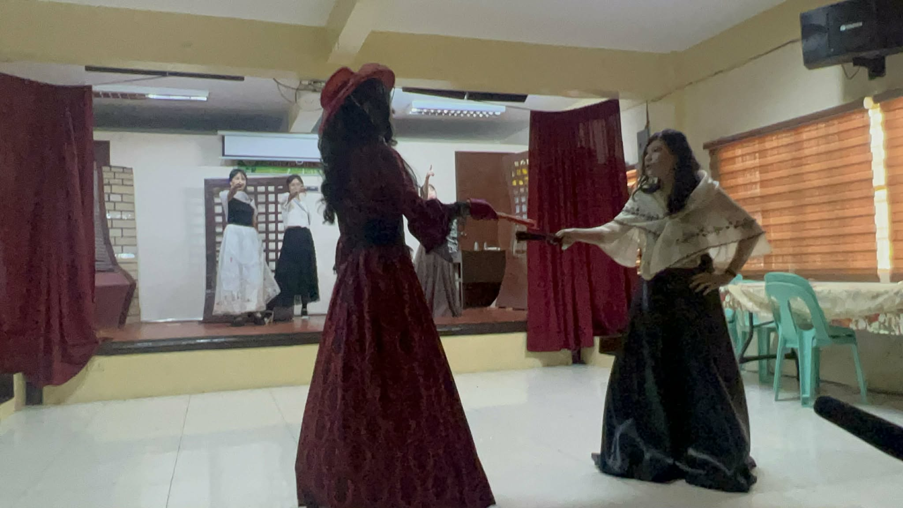
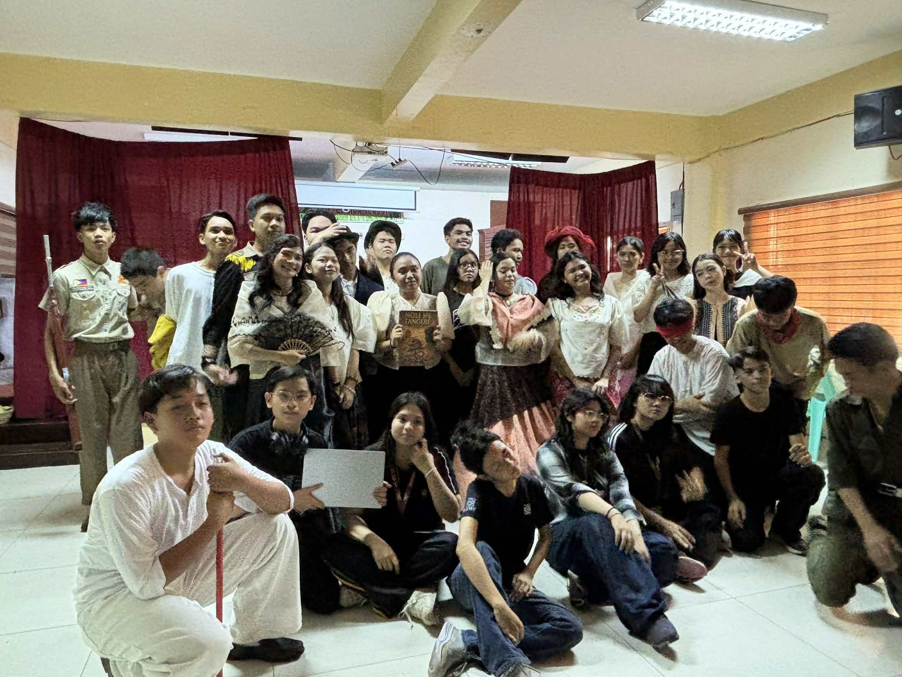
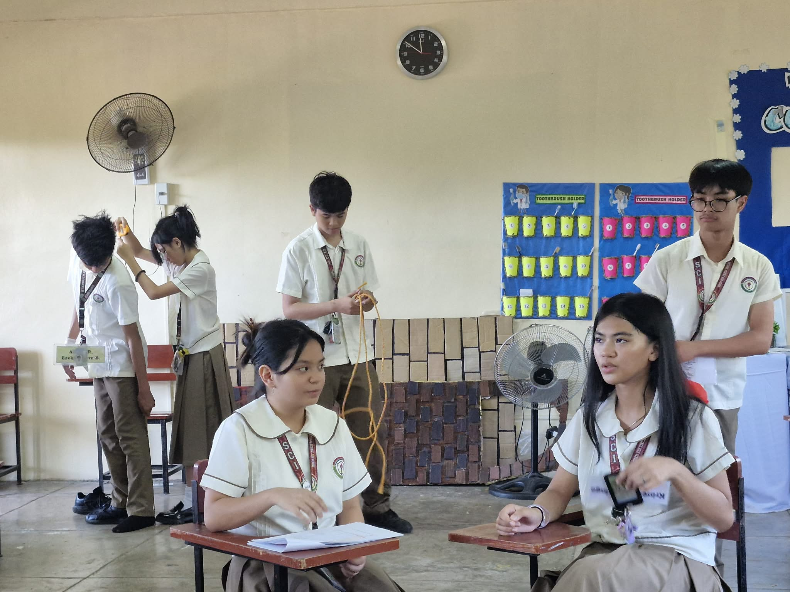

Reflecting on the Noli Play
Playing the role of Donya Victorina was a truly unforgettable experience. As a character known for her pretentiousness and desire to appear Spanish, I had to deeply study her mannerisms, gestures, and tone of voice to bring her personality to life on stage.
Participating in this play opened my eyes to the profound depth of Dr. Jose Rizal's work. Beyond just acting, this experience allowed me to better understand the social issues faced by our ancestors. It has been a great honor to be part of this production and to contribute to telling such an important story.